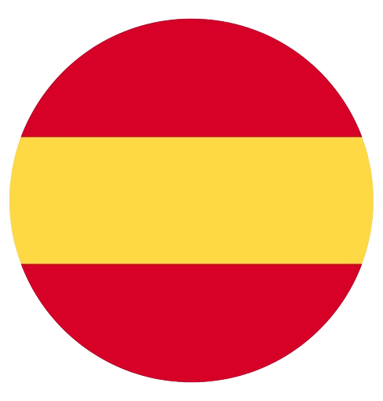

<mat-toolbar>
    <button (click)="drawer.toggle()" mat-icon-button class="example-icon" aria-label="Example icon-button with menu icon">
        <mat-icon>menu</mat-icon>
    </button>
    <span>Wise Tasking</span>
     
    <span class="example-spacer"></span>
    <button mat-icon-button (click)="logout()"><mat-icon>logout</mat-icon></button>
  </mat-toolbar>
    
  <mat-drawer-container class="example-container" autosize [hasBackdrop]="true">
    <mat-drawer #drawer class="example-sidenav" mode="side">
      <h5>Menu
        <mat-form-field [style.width.px]="180" class="language-select">
          <mat-label>Language</mat-label>
          <mat-select [(value)]="selected" [ngClass]="selected" matNativeControl required>
            <mat-option value="es">Spanish</mat-option >
            <mat-option  value="en">English</mat-option >
            </mat-select>
        </mat-form-field>
      </h5>  
      
      <br>
      <button mat-button class="button-side-nav" style="color: white;">
        Home
      </button>
      <br>
      <button mat-button class="button-side-nav" style="color: white;">
        Profile
      </button>
    </mat-drawer>
    <mat-drawer-content>
      <router-outlet></router-outlet>
    </mat-drawer-content>
  </mat-drawer-container>
  